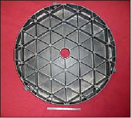
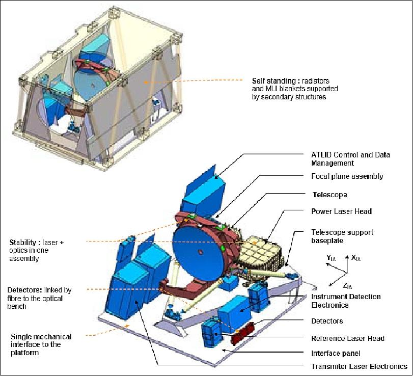
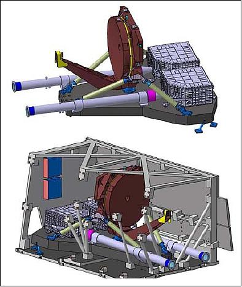

ATLID (Atmospheric Lidar):
ATLID is an ESA backscatter lidar instrument (active instrument) of EADS Astrium SAS (instrument prime), developed at Selex-Galileo, Florence, Italy. The objectives of this core instrument are to:
• Detect vertical profiles of radiatively significant clouds/aerosols (extinction coefficient alpha > 0.05 km-1); alpha backscatter sensitivity of 8 x 10-7 m-1 sr-1 (10 km horizontal integration)
• Derive cloud and aerosol optical depth and identify particle type and habit, a) alpha dual wavelength or HSRL (High-Spectral Resolution Laser), b) alpha measure depolarization
• Telescope: The optical design is based on a bistatic architecture. This architecture was selected with the objective to separate the emission and reception functions allowing a full pressurization of the emission path. An afocal 620 mm diameter Cassegrain telescope is used in reception, with a high magnification ratio. The receiver FOV (Field of View) is thus kept below 75 µrad, minimizing the shot noise associated with the acquisition of Earth background signal. - The design is based on an all-Silicon Carbide mirror and mounts, designed by EADS Astrium and manufactured by Mersen.

Figure 17: Telescope primary mirror made of SiC (image credit: ESA, EADS Astrium)

Figure 19: The architecture of the ATLID instrument (image credit: EADS Astrium SAS, ESA)
Pointing | 2º offset nadir in along-track direction |
Vertical sampling | 100 m in the altitude range 0.5-20 km |
Along-track sampling interval | 200 m |
Operating wavelength | 354.8 nm (tripled Nd:YAG wavelength) |
Telescope primary mirror aperture diameter | 600 mm |
Laser pulse energy, transmit pulse width | 30 mJ, 20 ns |
PRF (Pulse Repetition Frequency) | 74 Hz |
Receiver FOV (Field of View) | 25 µrad |
HSR filter FWHM (Full Width Half Maximum) | 0.35 pm |
Source data rate | 642 kbit/s |
Instrument mass, average power, size | 389 kg,, 310 W, 160 cm x 148 cm x 93 cm |
Table 5: Overview of ATLID instrument parameters

Figure 20: ATLID instrument overview (image credit: ESA)